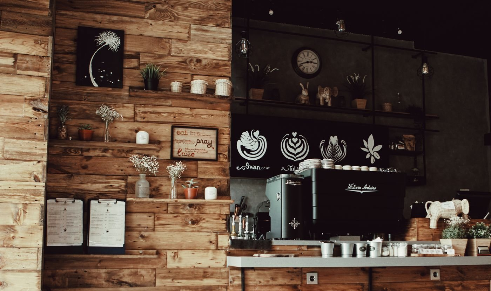

coffee
Lola's Barako
Bold Benguet barako brewed slow through a pour-over. Deep, earthy, with a rich caramel finish.
Filipino roots. Everyday rituals.
Slow mornings, familiar flavors, and a seat that feels like yours. Come for your coffee. Stay for the feeling.
Puerto Galera · A fictional neighborhood café

From our coffee bar
coffee
Bold Benguet barako brewed slow through a pour-over. Deep, earthy, with a rich caramel finish.
coffee
White coffee with sweetened condensed milk, served hot or over ice. Creamy and comforting.

coffee
A shot of espresso with house-made ube syrup and velvety steamed milk. Beautiful, purple, delicious.

A place to take your time
Inspired by the warmth of a Filipino home, Kape Ni Lola brings local coffee and comforting favorites together. A catch-up with a friend. A quiet page in your book. A moment just for you.
Meet the idea behind the café ↗Your kind of afternoon
Browse the space, explore the menu, or plan a table for your next slow afternoon.
A little room in your day
Explore the menu, pick a time, and preview a table request.